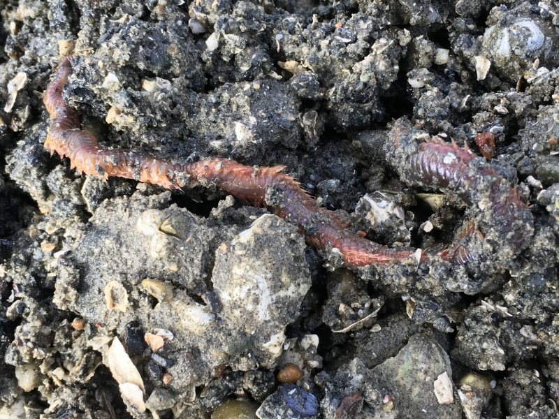
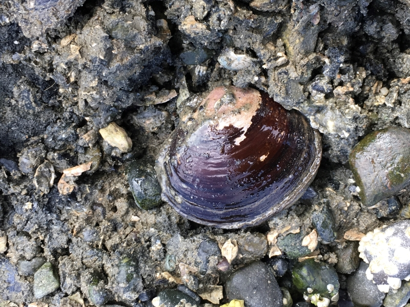
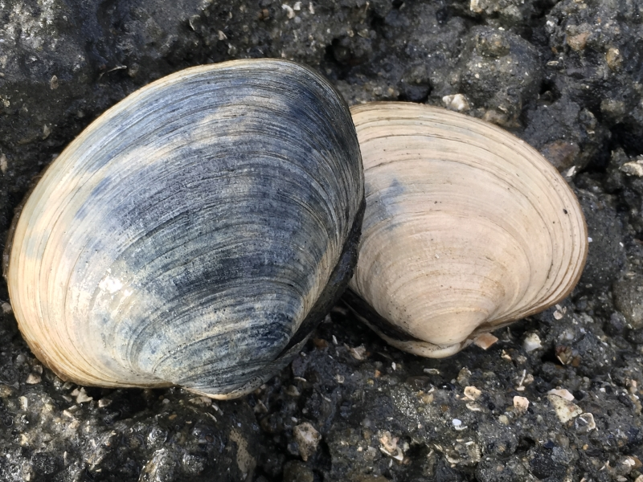
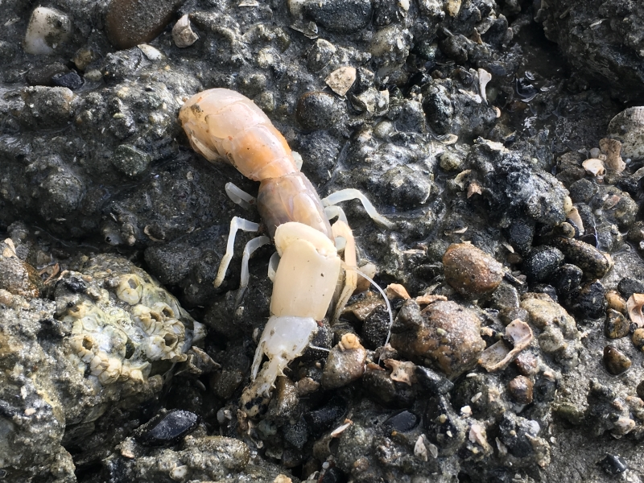
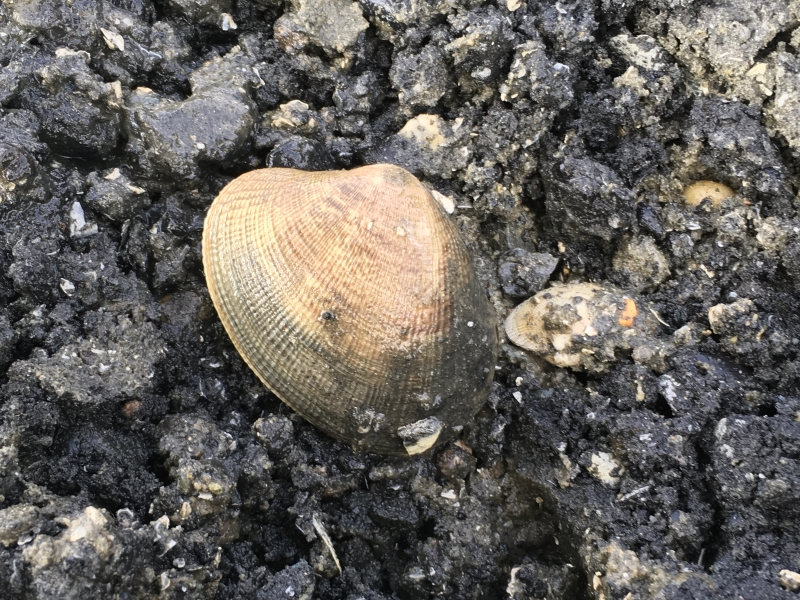

Education
Teaching our children and ourselves how to step lightly on the shores of Holmes Harbor. Many sensitive creatures live in the water and on the beach. Discover the magic lying beneath the surface.
Click on the pictures below for more information!
Giant Pile Worm
Giant Pile Worm
Nereis brandti In its most southern range, this large worm swarms, during spring and summer months, when it spawns. Sure to bring either exlamations of excitement or gasps from our children when they dig on the beach as they are unearthed.
Purple Varnish Clam
Purple Varnish Clam
Nuttalia obscurata This clam has spread from British Columbia to the Puget Sound Region. Originated from Japan, the aggressive distribution is a product of its ability too live longer in the larvae stage, floating in the currents. It is found in the upper intertital zone, and thrives in the fresh waster inputs from the uplands (land that is dry and not a part of the marine environment...where we live). Additionally, it is a bimodal feeder, which means it can eat twho ways: by its foot and filter feed. It retains higher level of toxins in its tissues, too. When digging clams, if you run across one, smash it with a rock. We don't need them to reproduce any faster!
Butter Clam
Butter Clam
Saxidomus gigantea This clam is found in the low intertidal zone. Popular in the commercial shellfish industry. Shockingly, it has a lifespan of over 20 years in some occasions! Always check your local clamming beach for Red Tide (PSP) Alerts, which can be found on the State of Washington Health Dept. website.
Sand Shrimp
Sand Shrimp
Neotrypaea californiensis Commonly known as the Ghost Shrimp, it is easily recognizable by the one claw being a lot larger than the other, particularly in the male. With a lifespan of 10 years, it lives in a J-shape burrow up to 30 inches deep. They share their temporary burrow, minimally, with 9 other species! So look for others! Mid to low intertidal zones.
Pacific Littleneck
Pacific Littleneck
Protothaca staminea The Littleneck grows slowly to the size legally collectible, which it reaches in about 3 to 4 years. It has a lifespan of approximately 16 years, if not disturbed. Use your clam gauge to ensure the harvestable size. It is most recognizable as the little steamer clam served in most restaurants. Check your clamming area for closures!